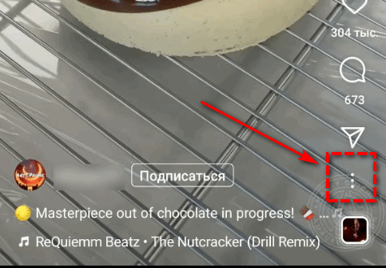
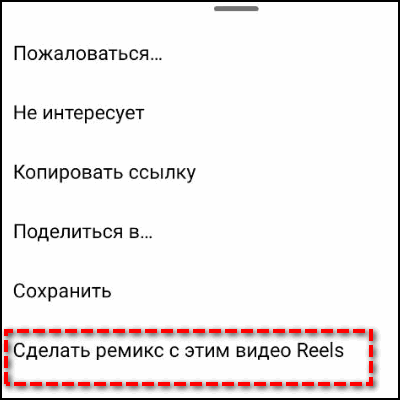
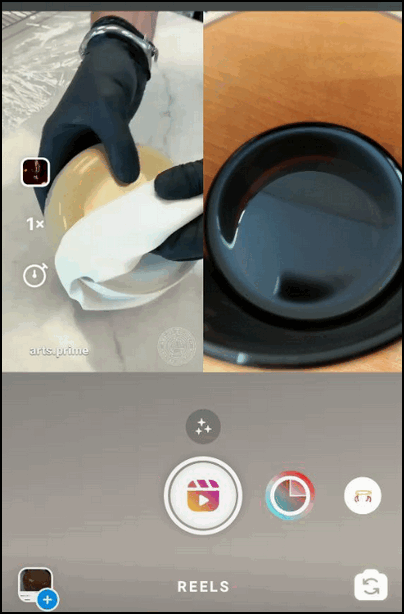
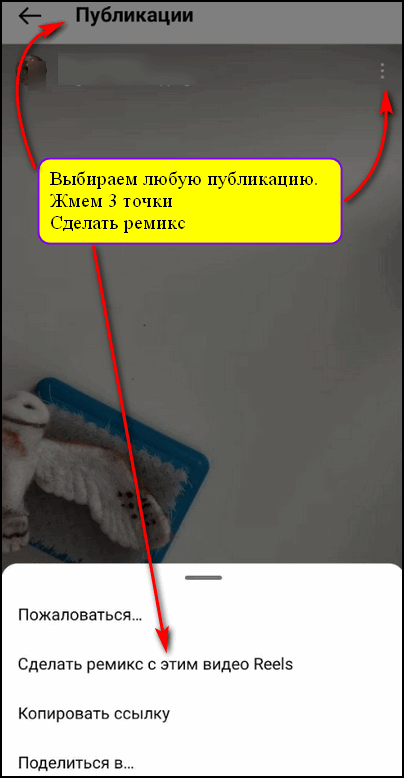

Как сделать ремикс в Инстаграме: как это работает и как найти
Сделать ремикс в Инстаграме* возможно с помощью видео, которое было загружено в Reels. Функция предполагает разделение экрана и создание «Дуэта».
Создать ремикс на чужое видео в Инстаграме*
В меню просмотра видеоклипов можно перейти к дополнительному меню и выбрать: «Создать ремикс». Появится меню с просмотром, где показано чужое видео и камера пользователя. Помимо ремиксов, социальная сеть планирует вводить другие инструменты для работы с клипами: эффекты голоса, коллаборации. Как сделать Рилс ремикс на чужой видеоклип:
- Зайти в приложение – выбрать раздел с просмотром Reels.
- Выбрать запись, на которую нужно сделать ремикс.
- Нажать снизу три точки.

- Записать «Remix».

- Записать свой видеоклип или добавить из Галереи.

- Опубликовать в социальной сети.
Как и остальные клипы, такая запись появится среди публикаций. Автор оригинала получит уведомление о том, что на его запись сделали ответ.
На старое видео
На видеоклип, который был добавлен в профиле в раздел «Reels», также можно снять ремикс. В этом случае нужно перейти к владельцу учетной записи и посмотреть, какие записи подходят. Записать ответ на старое видео:
- Зайти в профиль к выбранному автору.
- Нажать по видеоклипу – сверху три точки.
- Записать ремикс – сделать видео.

- Опубликовать в своем профиле.
Таким способом можно создавать ответы на клипы определенного пользователя. Количество ответов не ограничено.
Узнать, что на клип сняли ремикс
Как и в остальных разделах, сделав Ремикс Рилс в Инстаграме*, автор оригинального контента получает уведомление. Та же система работает при отметках на фотографии, видео. Но чтобы автор оригинала точно получил уведомление, его стоит указать через значок «@» в описании:
- Выбрать оригинальный клип, на который будет записано видео.
- Записать видео – Далее.
- Описание – вписать «@» и никнейм автора.
Посетители страницы смогут перейти к автору оригинала, посмотреть его другие записи. Такой способ подходит не только для соблюдения авторского права, но и создания мини-рекламы. Актуально для развивающихся сообществ, коллабораций блогеров.
Как удалить ремикс на видео в Инстаграме*
Если автор оригинала не хочет, чтобы на его запись делали ответ – нужно предварительно это указать в настройках конфиденциальности.
- лично написать пользователю, который создал ремикс;
- после размещения перейти к настройкам конфиденциальности;
- сделать свой профиль закрытым;
- пожаловаться на созданный клип.
- Перейти в категорию к опубликованным клипам.
- Нажать по недавно добавленному ремиксу.
- Три точки сверху – Удалить.
- Подтвердить действие.
Авторам ответов лучше следить за реакцией создателей оригиналов. В противном случае, может прийти предупреждение об использовании авторских прав или нарушении похожего типа.
Настройки конфиденциальности клипов в Инстаграме*
Владелец аккаунта может установить параметры конфиденциальности Reels, которые запрещают создание ответов или просмотр для определенной группы зрителей.
- разрешить просмотр только подписчикам или друзьям;
- запретить демонстрацию для любых зрителей;
- разрешить всем смотреть видео.
- Перейти к видео, которое нужно скрыть.
- Три точки сверху – Конфиденциальность.
- Могут просматривать только друзья.
Более эффективный способ – сделать страницу закрытой. В этом случае, просмотр будет доступен только подписчикам.